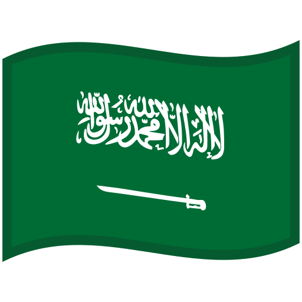

Abradż al-Bajt
Abradż al-Bajt, znany również jako Wieża Zegarowa w Mekce, to jeden z najbardziej charakterystycznych budynków na świecie. Wznoszący się na wysokość około 601 metrów, jest jednym z najwyższych budynków oraz największym zegarem na świecie. Kompleks ten znajduje się bezpośrednio obok najświętszego miejsca islamu — Meczetu Al-Masjid al-Haram, co czyni go nie tylko architektonicznym, ale także kulturowym symbolem.
Budowa Abradż al-Bajt została ukończona w 2012 roku, a jego projekt łączy tradycyjne islamskie wzory z nowoczesną technologią. Wieża zegarowa jest wyposażona w gigantyczny zegar o średnicy 43 metrów, widoczny z kilku kilometrów, a jej szczyt zdobi półksiężyc, który nocą jest podświetlany. Kompleks mieści luksusowe hotele, centra handlowe, apartamenty oraz liczne udogodnienia dla pielgrzymów odwiedzających Mekę.
Abradż al-Bajt pełni również funkcję centrum kulturalnego i religijnego, oferując przestrzeń dla milionów wiernych podczas corocznych pielgrzymek Hadżdż i Umra. Budynek jest przykładem zaawansowanych rozwiązań inżynieryjnych i symbolizuje rozwój oraz bogactwo regionu.
Jego monumentalna sylwetka dominuje nad panoramą Mekki, łącząc duchową głębię z nowoczesnym luksusem, dzięki czemu Abradż al-Bajt stał się jednym z najważniejszych punktów orientacyjnych na Bliskim Wschodzie.

Przypisy:
- Wikipedia.com - https://pl.wikipedia.org/wiki/Biskupiec
- Wikipedia.com - Autorstwa King Eliot - commons:File:Abraj-al-Bait-Towers.JPGzobacz też: en:File:Abraj-al-Bait-Towers.JPG, CC BY-SA 3.0, Link

{kind=link}
{kind=link}